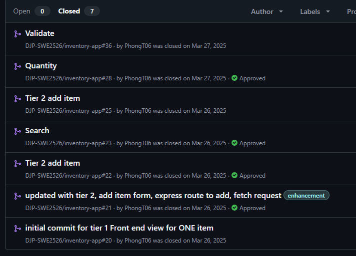

This repository is a collection of some of my key learnings during my Multiverse Software Engineering Bootcamp and my apprenticeship at HP. It includes an overview of my apprenticeship, as well as detailed information about the projects I worked on during the bootcamp and apprenticeship.
Hi, I'm Phong Truong — a former healthcare professional turned Software Engineering Apprentice. For over 10 years, I worked in healthcare, where I witnessed firsthand how technology can improve and save lives: streamlining patient care, enhancing data accuracy, and making critical systems more reliable. I have found that there were some flaws in the system and I always thought to myself about how things could be improved. That exposure sparked a deep curiosity about how software actually works behind the scenes — the logic, the problem-solving, the endless possibilities of how to improve the existing technologies to better serve people.
After a decade in that world, I decided to follow that curiosity full-time. I wanted to move from being a user of technology to someone who builds and shapes it. Joining my Apprenticeship at HP and the Multiverse Software Engineering Bootcamp felt like the perfect next step — a structured, hands-on way to transition into tech while contributing real value from day one.
Outside of code, I love to travel and explore new places with my wife and young daughter — those moments of discovery and quality time together keep me grounded and inspired. When I'm not out and about, you'll find me unwinding with a game of chess or diving into strategy-heavy video games like Civilization VI or Tropico 6. I enjoy the challenge of long-term planning, resource management, and outthinking complex systems — skills that surprisingly translate well to debugging, architecture decisions, and building scalable applications.
I'm passionate about creating clean, efficient, and user-focused software that solves real problems. Over the course of my Multiverse apprenticeship at HP, I've grown significantly as a developer — delivering meaningful contributions to my team, mastering front-end concepts, and gaining hands-on experience with working in a full development cycle, from beginning to end. As I near the end of the program and prepare to transition into a full-time Software Engineer role at HP, I'm eager to continue building on this foundation, tackle more complex challenges, and explore how technology can drive better outcomes.
During my Apprenticeship at HP (January 2025 - Present), I've been one of the key contributors to the Field Service Mobile App Software Development Team. This team is responsible for building and maintaining HP's mobile applications that empower field engineers and service technicians to handle on-site support, diagnostics, repairs, and customer interactions efficiently.
This hands-on experience across the stack has been invaluable in building my full-stack capabilities and understanding how software supports critical business functions like field service management.
As part of the Field Service Mobile App Software Development Team, my contributions have directly improved the usability and efficiency of HP's field service mobile application, which supports technicians and engineers in delivering on-site support, diagnostics, and service operations worldwide.
As my journey continues as a Software Engineer at HP, I'm excited to build on these impacts—continuing to deliver features that make a real difference for end-users while deepening my expertise across the full stack.
The Inventory Application was built to recreate a modern full-stack inventory management tool for an e-commerce engineering team. Beyond delivering core CRUD functionality, the project aimed to strengthen full-stack development fundamentals across React, Express, and SQLite/Sequelize. The team collaborated through GitHub PR workflows and followed a user-story-driven, tier-based development structure, gradually expanding functionality while practicing incremental delivery, code reviews, debugging, and iterative improvement. By progressing through these tiers, we implemented key user workflows such as viewing, adding, editing, and deleting items—mirroring real engineering processes and professional full-stack development practices.

POST /items and PUT /items/:id routes, including a reusable server-side validateItem function to enforce correct data types and required fields.quantity with proper validation, default values, and integration into item creation and updates.parseInt) and preventing invalid values such as negative quantities or zero/invalid prices.Cashflow Guru is a modern full-stack personal finance and budgeting application designed to go beyond passive expense tracking by delivering actionable, personalized financial guidance. Traditional budgeting tools often limit themselves to logging income vs. expenses without providing clear strategies for accelerating debt payoff or hitting savings targets faster. This project addresses that gap by enabling users to input monthly income, categorize and track expenses, define debt obligations (with interest rates/balances), set savings goals, and receive tailored advice — including suggested expense reductions, optimized debt repayment sequences, and accelerated savings plans — powered by calculated projections and intelligent recommendations.
Built as my final Multiverse bootcamp capstone project, Cashflow Guru aimed to deepen full-stack TypeScript proficiency across React (frontend), Node.js/Express (backend), and Prisma ORM with a database backend. As a solo developer, I followed a structured, incremental development approach — starting with core data models and CRUD, progressing to user input flows, financial calculations, and finally integrating the advice-generation logic. This mirrored professional engineering workflows: defining user stories, building iteratively, handling deployment challenges, debugging cross-stack issues, and refining UX for clarity and reliability. The result is a production-ready tool that demonstrates end-to-end ownership of a meaningful real-world application while practicing clean architecture, type safety, and problem-solving under constraints.
The Wish Granting API was developed as our Back-End Module project to practice building a well-structured, fully documented RESTful API using Node.js, Express, and a relational database. The goal of the project was to design and implement a backend service that allows users to create, view, update, and delete “wishes” through clearly defined endpoints while applying best practices in routing, validation, error handling, and asynchronous database operations.
This project focused on strengthening core back-end engineering fundamentals — including data modeling, controller logic, layered architecture, and writing modular, maintainable code. Our team also emphasized collaboration through GitHub workflows, PR reviews, and iterative improvements. By completing this API, we learned how to design scalable endpoints, manage application state on the server, and ensure reliable behavior through consistent HTTP responses and validation patterns.
/auth/google route handles Google provider login and auto-creates users on first OAuth sign-in.
requireAdmin middleware. Fairies include name, specialty, status, description, and a linked user_id, and return joined User data in responses.
fetch + API key) to produce an ironic, humorous magical outcome in the style of The Fairly OddParents, storing the generated text as the wish's outcome.
requireAdmin middleware.
category: fun/practical/chaotic; fairy status: available/busy), and added associations to return joined user info.WishAPI class handling base URL, auth headers, token persistence, response parsing, and helper methods (login, getWishes, create/update/grant, etc.).outcome, and stamps granted_at.?category=fun/practical/chaotic)
and implemented request validation for invalid values.WishAPI frontend utility class to manage base URLs,
authentication headers, fetch requests, JSON parsing, and error handling, enabling
consistent API integration across pages.